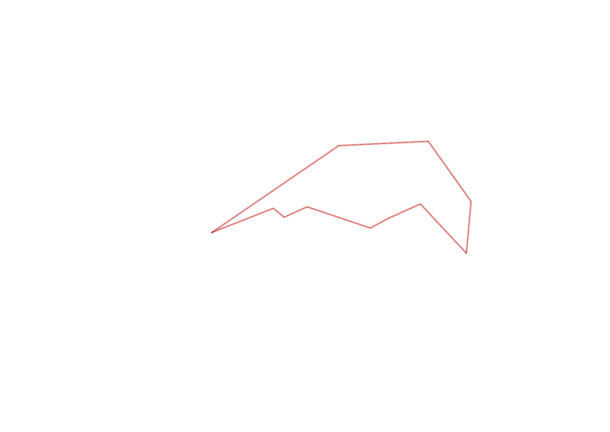
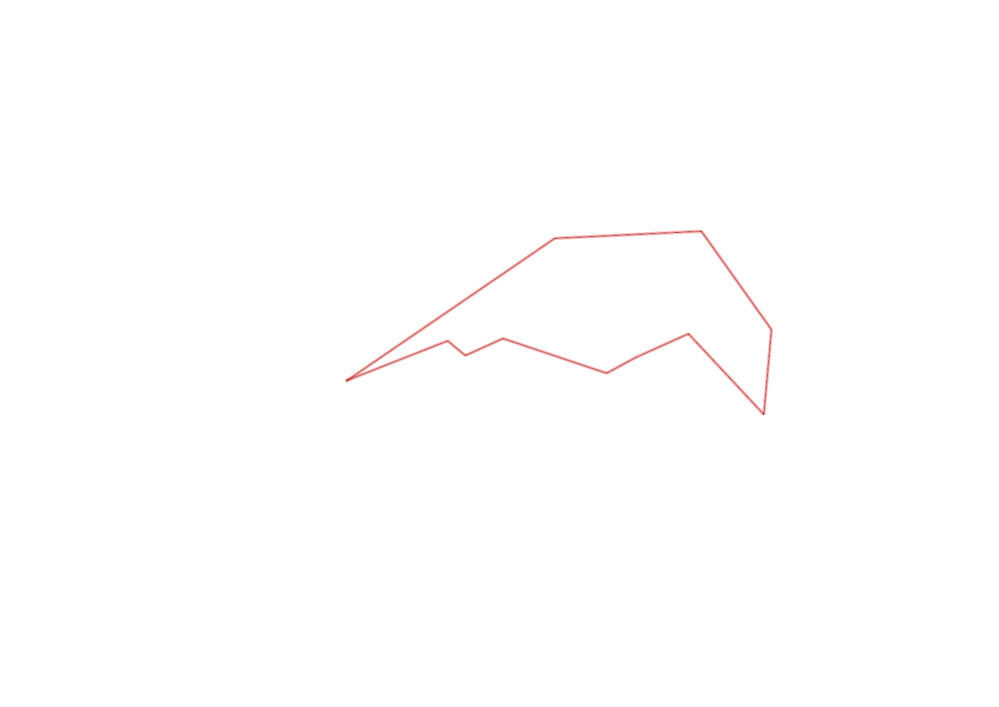

| Control |
Points |
Time Punched |
Distance |
Your Time |
Pace |
Place |
Fastest Time |
Median Time |
% Behind Fastest |
| 92 |
90 |
|
0.23 |
0:07:01 |
30:30 |
11 / 11 |
0:02:15 |
0:02:35 |
211% |
| 35 |
30 |
|
0.05 |
0:06:12 |
2:04:00 |
12 / 12 |
0:01:31 |
0:01:55 |
308% |
| 47 |
40 |
|
0.09 |
0:03:05 |
34:15 |
11 / 11 |
0:00:54 |
0:01:31 |
242% |
| 48 |
40 |
|
0.23 |
0:07:30 |
32:36 |
6 / 7 |
0:02:14 |
0:03:31 |
235% |
| 64 |
60 |
|
0.07 |
0:03:01 |
43:05 |
14 / 14 |
0:00:38 |
0:01:05 |
376% |
| 49 |
40 |
|
0.12 |
0:04:09 |
34:35 |
12 / 12 |
0:00:55 |
0:01:28 |
352% |
| 46 |
40 |
|
0.23 |
0:04:05 |
17:45 |
8 / 8 |
0:02:06 |
0:02:39 |
94% |
| 52 |
50 |
|
0.18 |
0:02:16 |
12:35 |
3 / 3 |
0:01:56 |
0:02:14 |
17% |
| 109 |
100 |
|
0.26 |
0:03:18 |
12:41 |
7 / 9 |
0:01:20 |
0:02:00 |
147% |
| 123 |
20 |
|
0.31 |
0:06:17 |
20:16 |
10 / 10 |
0:01:36 |
0:02:50 |
292% |
| Finish |
0 |
|
0.54 |
0:08:52 |
16:25 |
1 / 1 |
0:08:52 |
0:08:52 |
0% |
Total Distance Covered: 2.31km
Points Scored: 510
Late Penalty: 0
Final Score: 510
Total Time: 0hours 55minutes 46seconds
Efficiency: 220.78 points/km
 
